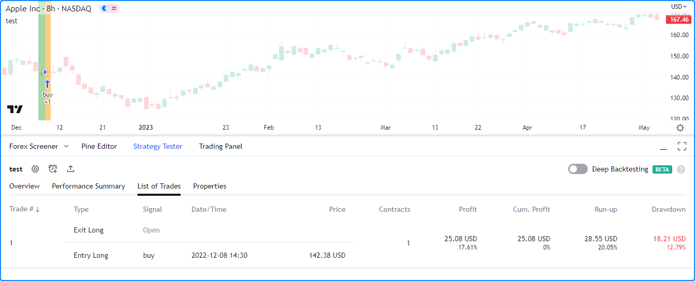

Strategies¶
- Introduction
- A simple strategy example
- Applying a strategy to a chart
- Strategy tester
- Broker emulator
- Orders and entries
- Position sizing
- Closing a market position
- OCA groups
- Currency
- Altering calculation behavior
- Simulating trading costs
- Risk management
- Margin
- Strategy Alerts
- Notes on testing strategies
Introduction¶
Pine Script® strategies simulate the execution of trades on historical and real-time data to facilitate the backtesting and forward testing of trading systems. They include many of the same capabilities as Pine Script® indicators while providing the ability to place, modify, and cancel hypothetical orders and analyze the results.
When a script uses the
strategy()
function for its declaration, it gains access to the strategy.* namespace, where
it can call functions and variables for simulating orders and accessing essential
strategy information. Additionally, the script will display information and simulated
results externally in the “Strategy Tester” tab.
A simple strategy example¶
The following script is a simple strategy that simulates the entry of long or short positions upon the crossing of two moving averages:
//@version=5
strategy("test", overlay = true)
// Calculate two moving averages with different lengths.
float fastMA = ta.sma(close, 14)
float slowMA = ta.sma(close, 28)
// Enter a long position when `fastMA` crosses over `slowMA`.
if ta.crossover(fastMA, slowMA)
strategy.entry("buy", strategy.long)
// Enter a short position when `fastMA` crosses under `slowMA`.
if ta.crossunder(fastMA, slowMA)
strategy.entry("sell", strategy.short)
// Plot the moving averages.
plot(fastMA, "Fast MA", color.aqua)
plot(slowMA, "Slow MA", color.orange)
- Note that:
- The
strategy("test" overlay = true)line declares that the script is a strategy named “test” with visual outputs overlaid on the main chart pane. - strategy.entry()
is the command that the script uses to simulate “buy” and “sell” orders. When the script places an
order, it also plots the order
idon the chart and an arrow to indicate the direction. - Two plot() functions plot the moving averages with two different colors for visual reference.
- The
Applying a strategy to a chart¶
To test a strategy, apply it to the chart. You can use a built-in strategy from the “Indicators & Strategies” dialog box or write your own in the Pine Editor. Click “Add to chart” from the “Pine Editor” tab to apply a script to the chart:
After a strategy script is compiled and applied to a chart, it will plot order marks on the main chart pane and display simulated performance results in the “Strategy Tester” tab below:
Note
The results from a strategy applied to non-standard charts
(Heikin Ashi,
Renko,
Line Break,
Kagi,
Point & Figure,
and Range)
do not reflect actual market conditions by default. Strategy scripts will use the
synthetic price values from these charts during simulation, which often do not align
with actual market prices and will thus produce unrealistic backtest results. We
therefore highly recommend using standard chart types for backtesting strategies.
Alternatively, on Heikin Ashi charts, users can simulate orders using actual prices by
enabling the “Fill orders using standard OHLC” option in the
Strategy properties
or by using fill_orders_on_standard_ohlc = true in the
strategy()
function call.
Strategy tester¶
The Strategy Tester module is available to all scripts declared with the strategy() function. Users can access this module from the “Strategy Tester” tab below their charts, where they can conveniently visualize their strategies and analyze hypothetical performance results.
Overview¶
The Overview tab of the Strategy Tester presents essential performance metrics and equity and drawdown curves over a simulated sequence of trades, providing a quick look at strategy performance without diving into granular detail. The chart in this section shows the strategy’s equity curve as a baseline plot centered at the initial value, the buy and hold equity curve as a line plot, and the drawdown curve as a histogram plot. Users can toggle these plots and scale them as absolute values or percentages using the options below the chart.
- Note that:
- The overview chart uses two scales; the left is for the equity curves, and the right is for the drawdown curve.
- When a user clicks a point on these plots, this will direct the main chart view to the point where the trade was closed.
Performance summary¶
The Performance Summary tab of the module presents a comprehensive overview of a strategy’s performance metrics. It displays three columns: one for all trades, one for all longs, and one for all shorts, to provide traders with more detailed insights on a strategy’s long, short, and overall simulated trading performance.
List of trades¶
The List of Trades tab provides a granular look at the trades simulated by a strategy with essential information, including the date and time of execution, the type of order used (entry or exit), the number of contracts/shares/lots/units traded, and the price, as well as some key trade performance metrics.
- Note that:
- Users can navigate the times of specific trades on their charts by clicking on them in this list.
- By clicking the “Trade #” field above the list, users can organize the trades in ascending order starting from the first or descending order starting from the last.
Properties¶
The Properties tab provides detailed information about a strategy’s configuration and the dataset to which it is applied. It includes the strategy’s date range, symbol information, script settings, and strategy properties.
- Date Range - Includes the range of dates with simulated trades and the total available backtesting range.
- Symbol Info - Contains the symbol name and broker/exchange, the chart’s timeframe and type, the tick size, the point value for the chart, and the base currency.
- Strategy Inputs - Outlines the various parameters and variables used in the strategy script available in the “Inputs” tab of the script settings.
- Strategy Properties - Provides an overview of the configuration of the trading strategy. It includes essential details such as the initial capital, base currency, order size, margin, pyramiding, commission, and slippage. Additionally, this section highlights any modifications made to strategy calculation behavior.
Broker emulator¶
TradingView utilizes a broker emulator to simulate the performance of trading strategies. Unlike in real-life trading, the emulator strictly uses available chart prices for order simulation. Consequently, the simulation can only place historical trades after a bar closes, and it can only place real-time trades on a new price tick. For more information on this behavior, please refer to the Pine Script® Execution model.
Since the emulator can only use chart data, it makes assumptions about intrabar price movement. It uses a bar’s open, high, and low prices to infer intrabar activity while calculating order fills with the following logic:
- If the high price is closer to the opening price than the low price, it assumes that the price moved in this order on the bar: open → high → low → close.
- If the low price is closer to the opening price than the high price, it assumes that the price moved in this order on the bar: open → low → high → close.
- The broker emulator assumes no gaps exist between prices within bars; in the “eyes” of the emulator, the full range of intrabar prices is available for order execution.

Bar magnifier¶
Premium account holders can override the broker emulator’s intrabar assumptions via the
use_bar_magnifier parameter of the
strategy()
function or the “Use bar magnifier” input in the “Properties” tab of the script settings.
The Bar Magnifier inspects data
on timeframes smaller than the chart’s to obtain more granular information about price
action within a bar, thus allowing more precise order fills during simulation.
To demonstrate, the following script places a “Buy” limit order at the entryPrice
and an “Exit” limit order at the exitPrice when the
time value
crosses the orderTime, and draws two horizontal lines to visualize the order prices.
The script also highlights the background using the orderColor to indicate when
the strategy placed the orders:
//@version=5
strategy("Bar Magnifier Demo", overlay = true, use_bar_magnifier = false)
//@variable The UNIX timestamp to place the order at.
int orderTime = timestamp("UTC", 2023, 3, 22, 18)
//@variable Returns `color.orange` when `time` crosses the `orderTime`, false otherwise.
color orderColor = na
// Entry and exit prices.
float entryPrice = hl2 - (high - low)
float exitPrice = entryPrice + (high - low) * 0.25
// Entry and exit lines.
var line entryLine = na
var line exitLine = na
if ta.cross(time, orderTime)
// Draw new entry and exit lines.
entryLine := line.new(bar_index, entryPrice, bar_index + 1, entryPrice, color = color.green, width = 2)
exitLine := line.new(bar_index, exitPrice, bar_index + 1, exitPrice, color = color.red, width = 2)
// Update order highlight color.
orderColor := color.new(color.orange, 80)
// Place limit orders at the `entryPrice` and `exitPrice`.
strategy.entry("Buy", strategy.long, limit = entryPrice)
strategy.exit("Exit", "Buy", limit = exitPrice)
// Update lines while the position is open.
else if strategy.position_size > 0.0
entryLine.set_x2(bar_index + 1)
exitLine.set_x2(bar_index + 1)
bgcolor(orderColor)
As we see in the chart above, the broker emulator assumed that intrabar prices moved
from open to high, then high to low, then low to close on the bar the “Buy” order filled
on, meaning the emulator assumed that the “Exit” order couldn’t fill on the same bar.
However, after including use_bar_magnifier = true in the declaration statement,
we see a different story:
Note
The maximum amount of intrabars that a script can request is 100,000. Some symbols with lengthier history may not have full intrabar coverage for their beginning chart bars with this limitation, meaning that simulated trades on those bars will not be affected by the bar magnifier.
Orders and entries¶
Just like in real-life trading, Pine strategies use orders to manage positions. In this context, an order is a command to simulate a market action, and a trade is the result after the order fills. Thus, to enter or exit positions using Pine, users must create orders with parameters that specify how they’ll behave.
To take a closer look at how orders work and how they become trades, let’s write a simple strategy script:
//@version=5
strategy("My strategy", overlay = true, margin_long = 100, margin_short = 100)
//@function Displays text passed to `txt` when called.
debugLabel(txt) =>
label.new(
bar_index, high, text = txt, color=color.lime, style = label.style_label_lower_right,
textcolor = color.black, size = size.large
)
longCondition = bar_index % 20 == 0 // true on every 20th bar
if (longCondition)
debugLabel("Long entry order created")
strategy.entry("My Long Entry Id", strategy.long)
strategy.close_all()
In this script, we’ve defined a longCondition that is true whenever the bar_index is
divisible by 20, i.e., every 20th bar. The strategy uses this condition within an
if structure to simulate an entry order with
strategy.entry()
and draws a label at the entry price with the user-defined debugLabel() function. The script calls
strategy.close_all()
from the global scope to simulate a market order that closes any open position.
Let’s see what happens once we add the script to our chart:
The blue arrows on the chart indicate entry locations, and the purple ones mark the points where the strategy closed positions. Notice that the labels precede the actual entry point rather than occurring on the same bar - this is orders in action. By default, Pine strategies wait for the next available price tick before filling orders, as filling an order on the same tick isn’t realistic. Also, they recalculate on the close of every historical bar, meaning the next available tick to fill an order at is the open of the next bar in this case. As a result, by default, all orders are delayed by one chart bar.
It’s important to note that although the script calls
strategy.close_all()
from the global scope, forcing execution on every bar, the function call does nothing if the strategy
isn’t simulating an open position. If there is an open position, the command issues a market order to
close it, which executes on the next available tick. For example, when the longCondition is true
on bar 20, the strategy places an entry order to fill at the next tick, which is at the open of bar 21.
Once the script recalculates its values on that bar’s close, the function places an order to close the
position, which fills at the open of bar 22.
Order types¶
Pine Script® strategies allow users to simulate different order types for their particular needs. The main notable types are market, limit, stop, and stop-limit.
Market orders¶
Market orders are the most basic type of orders. They command a strategy to buy or sell a security
as soon as possible, regardless of the price. Consequently, they always execute on the next available
price tick. By default, all strategy.*() functions that generate orders specifically produce market orders.
The following script simulates a long market order when the bar_index is divisible by 2 * cycleLength.
Otherwise, it simulates a short market order when the bar_index is divisible by cycleLength,
resulting in a strategy with alternating long and short trades once every cycleLength bars:
//@version=5
strategy("Market order demo", overlay = true, margin_long = 100, margin_short = 100)
//@variable Number of bars between long and short entries.
cycleLength = input.int(10, "Cycle length")
//@function Displays text passed to `txt` when called.
debugLabel(txt, lblColor) => label.new(
bar_index, high, text = txt, color = lblColor, textcolor = color.white,
style = label.style_label_lower_right, size = size.large
)
//@variable Returns `true` every `2 * cycleLength` bars.
longCondition = bar_index % (2 * cycleLength) == 0
//@variable Returns `true` every `cycleLength` bars.
shortCondition = bar_index % cycleLength == 0
// Generate a long market order with a `color.green` label on `longCondition`.
if longCondition
debugLabel("Long market order created", color.green)
strategy.entry("My Long Entry Id", strategy.long)
// Otherwise, generate a short market order with a `color.red` label on `shortCondition`.
else if shortCondition
debugLabel("Short market order created", color.red)
strategy.entry("My Short Entry Id", strategy.short)
Limit orders¶
Limit orders command a strategy to enter a position at a specific price or better (lower than specified for long
orders and higher for short ones). When the current market price is better than the order command’s limit
parameter, the order will fill without waiting for the market price to reach the limit level.
To simulate limit orders in a script, pass a price value to an order placement command with a limit parameter.
The following example places a limit order 800 ticks below the bar close 100 bars before the last_bar_index:
//@version=5
strategy("Limit order demo", overlay = true, margin_long = 100, margin_short = 100)
//@function Displays text passed to `txt` and a horizontal line at `price` when called.
debugLabel(price, txt) =>
label.new(
bar_index, price, text = txt, color = color.teal, textcolor = color.white,
style = label.style_label_lower_right, size = size.large
)
line.new(
bar_index, price, bar_index + 1, price, color = color.teal, extend = extend.right,
style = line.style_dashed
)
// Generate a long limit order with a label and line 100 bars before the `last_bar_index`.
if last_bar_index - bar_index == 100
limitPrice = close - syminfo.mintick * 800
debugLabel(limitPrice, "Long Limit order created")
strategy.entry("Long", strategy.long, limit = limitPrice)
Note how the script placed the label and started the line several bars before the trade. As long as the price remained
above the limitPrice value, the order could not fill. Once the market price reached the limit, the strategy executed
the trade mid-bar. If we had set the limitPrice to 800 ticks above the bar close rather than below, the order would
fill immediately since the price is already at a better value:
//@version=5
strategy("Limit order demo", overlay = true, margin_long = 100, margin_short = 100)
//@function Displays text passed to `txt` and a horizontal line at `price` when called.
debugLabel(price, txt) =>
label.new(
bar_index, price, text = txt, color = color.teal, textcolor = color.white,
style = label.style_label_lower_right, size = size.large
)
line.new(
bar_index, price, bar_index + 1, price, color = color.teal, extend = extend.right,
style = line.style_dashed
)
// Generate a long limit order with a label and line 100 bars before the `last_bar_index`.
if last_bar_index - bar_index == 100
limitPrice = close + syminfo.mintick * 800
debugLabel(limitPrice, "Long Limit order created")
strategy.entry("Long", strategy.long, limit = limitPrice)
Stop and stop-limit orders¶
Stop orders command a strategy to simulate another order after price reaches the specified stop price or a worse
value (higher than specified for long orders and lower for short ones). They are essentially the opposite of limit
orders. When the current market price is worse than the stop parameter, the strategy will trigger the subsequent
order without waiting for the current price to reach the stop level. If the order placement command includes a limit
argument, the subsequent order will be a limit order at the specified value. Otherwise, it will be a market order.
The script below places a stop order 800 ticks above the close 100 bars ago. In this example, the strategy entered
a long position when the market price crossed the stop price some bars after it placed the order. Notice that the
initial price at the time of the order was better than the one passed to stop. An equivalent limit order would have filled
on the following chart bar:
//@version=5
strategy("Stop order demo", overlay = true, margin_long = 100, margin_short = 100)
//@function Displays text passed to `txt` when called and shows the `price` level on the chart.
debugLabel(price, txt) =>
label.new(
bar_index, high, text = txt, color = color.teal, textcolor = color.white,
style = label.style_label_lower_right, size = size.large
)
line.new(bar_index, high, bar_index, price, style = line.style_dotted, color = color.teal)
line.new(
bar_index, price, bar_index + 1, price, color = color.teal, extend = extend.right,
style = line.style_dashed
)
// Generate a long stop order with a label and lines 100 bars before the last bar.
if last_bar_index - bar_index == 100
stopPrice = close + syminfo.mintick * 800
debugLabel(stopPrice, "Long Stop order created")
strategy.entry("Long", strategy.long, stop = stopPrice)
Order placement commands that use both limit and stop arguments produce stop-limit orders. This order type
waits for the price to cross the stop level, then places a limit order at the specified limit price.
Let’s modify our previous script to simulate and visualize a stop-limit order. In this example, we use the low value
from 100 bars ago as the limit price in the entry command. This script also displays a label and price level to indicate
when the strategy crosses the stopPrice, i.e., when the strategy activates the limit order. Notice how the market
price initially reaches the limit level, but the strategy doesn’t simulate a trade because the price must cross the
stopPrice to place the pending limit order at the limitPrice:
//@version=5
strategy("Stop-Limit order demo", overlay = true, margin_long = 100, margin_short = 100)
//@function Displays text passed to `txt` when called and shows the `price` level on the chart.
debugLabel(price, txt, lblColor, lineWidth = 1) =>
label.new(
bar_index, high, text = txt, color = lblColor, textcolor = color.white,
style = label.style_label_lower_right, size = size.large
)
line.new(bar_index, close, bar_index, price, style = line.style_dotted, color = lblColor, width = lineWidth)
line.new(
bar_index, price, bar_index + 1, price, color = lblColor, extend = extend.right,
style = line.style_dashed, width = lineWidth
)
var float stopPrice = na
var float limitPrice = na
// Generate a long stop-limit order with a label and lines 100 bars before the last bar.
if last_bar_index - bar_index == 100
stopPrice := close + syminfo.mintick * 800
limitPrice := low
debugLabel(limitPrice, "", color.gray)
debugLabel(stopPrice, "Long Stop-Limit order created", color.teal)
strategy.entry("Long", strategy.long, stop = stopPrice, limit = limitPrice)
// Draw a line and label once the strategy activates the limit order.
if high >= stopPrice
debugLabel(limitPrice, "Limit order activated", color.green, 2)
stopPrice := na
Order placement commands¶
Pine Script® strategies feature several functions to simulate the placement of orders, known as order placement commands. Each command serves a unique purpose and behaves differently from the others.
`strategy.entry()`¶
This command simulates entry orders. By default, strategies place market orders when calling this function, but they
can also create stop, limit, and stop-limit orders when utilizing the stop and limit parameters.
To simplify opening positions, strategy.entry()
features several unique behaviors. One such behavior is that this command can reverse an open market position without additional
function calls. When an order placed using strategy.entry()
fills, the function will automatically calculate the amount the strategy needs to close the open market position and trade qty
contracts/shares/lots/units in the opposite direction by default. For example, if a strategy has an open position of 15 shares in the
strategy.long direction and calls
strategy.entry() to place a market order in the
strategy.short direction, the amount the strategy will
trade to place the order is 15 shares plus the qty of the new short order.
The example below demonstrates a strategy that uses only strategy.entry()
calls to place entry orders. It creates a long market order with a qty value of 15 shares once every 100 bars and a
short market order with a qty of 5 once every 25 bars. The script highlights the background blue and red for occurrences
of the respective buyCondition and sellCondition:

//@version=5
strategy("Entry demo", "test", overlay = true)
//@variable Is `true` on every 100th bar.
buyCondition = bar_index % 100 == 0
//@variable Is `true` on every 25th bar except for those that are divisible by 100.
sellCondition = bar_index % 25 == 0 and not buyCondition
if buyCondition
strategy.entry("buy", strategy.long, qty = 15)
if sellCondition
strategy.entry("sell", strategy.short, qty = 5)
bgcolor(buyCondition ? color.new(color.blue, 90) : na)
bgcolor(sellCondition ? color.new(color.red, 90) : na)
As we see in the chart above, the order marks show that the strategy traded 20 shares on each order fill rather than 15 and 5. Since strategy.entry() automatically reverses positions, unless otherwise specified via the strategy.risk.allow_entry_in() function, it adds the open position size (15 for long entries) to the new order’s size (5 for short entries) when it changes the direction, resulting in a traded quantity of 20 shares.
Notice that in the above example, although the sellCondition occurs three times before another buyCondition,
the strategy only places a “sell” order on the first occurrence. Another unique behavior of the
strategy.entry() command is that it’s
affected by a script’s pyramiding setting. Pyramiding specifies the number of consecutive orders the strategy can fill
in the same direction. Its value is 1 by default, meaning the strategy only allows one consecutive order to fill in either
direction. Users can set the strategy pyramiding values via the pyramiding parameter of the
strategy() function call or the “Pyramiding”
input in the “Properties” tab of the script settings.
If we add pyramiding = 3 to our previous script’s declaration statement, the strategy will allow up to three consecutive trades
in the same direction, meaning it can simulate new market orders on each occurrence of sellCondition:
`strategy.order()`¶
This command simulates a basic order. Unlike most order placement commands, which contain internal logic to simplify interfacing with strategies, strategy.order() uses the specified parameters without accounting for most additional strategy settings. Orders placed by strategy.order() can open new positions and modify or close existing ones.
The following script uses only strategy.order() calls to create and modify entries. The strategy simulates a long market order for 15 units every 100 bars, then three short orders for five units every 25 bars. The script highlights the background blue and red to indicate when the strategy simulates “buy” and “sell” orders:
//@version=5
strategy("Order demo", "test", overlay = true)
//@variable Is `true` on every 100th bar.
buyCond = bar_index % 100 == 0
//@variable Is `true` on every 25th bar except for those that are divisible by 100.
sellCond = bar_index % 25 == 0 and not buyCond
if buyCond
strategy.order("buy", strategy.long, qty = 15) // Enter a long position of 15 units.
if sellCond
strategy.order("sell", strategy.short, qty = 5) // Exit 5 units from the long position.
bgcolor(buyCond ? color.new(color.blue, 90) : na)
bgcolor(sellCond ? color.new(color.red, 90) : na)
This particular strategy will never simulate a short position, as unlike strategy.entry(), strategy.order() does not automatically reverse positions. When using this command, the resulting market position is the net sum of the current market position and the filled order quantity. After the strategy fills the “buy” order for 15 units, it executes three “sell” orders that reduce the open position by five units each, and 15 - 5 * 3 = 0. The same script would behave differently using strategy.entry(), as per the example shown in the section above.
`strategy.exit()`¶
This command simulates exit orders. It’s unique in that it allows a strategy to exit a market position or
form multiple exits in the form of stop-loss, take-profit, and trailing stop orders via the loss, stop,
profit, limit, and trail_* parameters.
The most basic use of the strategy.exit() command is the creation of levels where the strategy will exit a position due to losing too much money (stop-loss), earning enough money (take-profit), or both (bracket).
The stop-loss and take-profit functionalities of this command are associated with two parameters. The function’s loss and profit
parameters specify stop-loss and take-profit values as a defined number of ticks away from the entry order’s price, while its stop and limit
parameters provide specific stop-loss and take-profit price values. The absolute parameters in the function call supersede the relative ones.
If a strategy.exit() call contains profit and limit arguments,
the command will prioritize the limit value and ignore the profit value. Likewise, it will only consider the stop value when the function call
contains stop and loss arguments.
Note
Despite sharing the same names with parameters from strategy.entry()
and strategy.order() commands, the limit
and stop parameters work differently in strategy.exit().
In the first case, using limit and stop in the command will create a single stop-limit order that opens a limit order after
crossing the stop price. In the second case, the command will create a separate limit and stop order to exit from an open position.
All exit orders from strategy.exit()
with a from_entry argument are bound to the id of a corresponding entry order; strategies cannot simulate exit
orders when there is no open market position or active entry order associated with a from_entry ID.
The following strategy places a “buy” entry order via strategy.entry() and a stop-loss and take-profit order via the strategy.exit() command every 100 bars. Notice that the script calls strategy.exit() twice. The “exit1” command references a “buy1” entry order, and “exit2” references the “buy” order. The strategy will only simulate exit orders from “exit2” because “exit1” references an order ID that doesn’t exist:
//@version=5
strategy("Exit demo", "test", overlay = true)
//@variable Is `true` on every 100th bar.
buyCondition = bar_index % 100 == 0
//@variable Stop-loss price for exit commands.
var float stopLoss = na
//@variable Take-profit price for exit commands.
var float takeProfit = na
// Place orders upon `buyCondition`.
if buyCondition
if strategy.position_size == 0.0
stopLoss := close * 0.99
takeProfit := close * 1.01
strategy.entry("buy", strategy.long)
strategy.exit("exit1", "buy1", stop = stopLoss, limit = takeProfit) // Does nothing. "buy1" order doesn't exist.
strategy.exit("exit2", "buy", stop = stopLoss, limit = takeProfit)
// Set `stopLoss` and `takeProfit` to `na` when price touches either, i.e., when the strategy simulates an exit.
if low <= stopLoss or high >= takeProfit
stopLoss := na
takeProfit := na
plot(stopLoss, "SL", color.red, style = plot.style_circles)
plot(takeProfit, "TP", color.green, style = plot.style_circles)
- Note that:
- Limit and stop orders from each exit command do not necessarily fill at the specified prices. Strategies can fill limit orders at better prices and stop orders at worse prices, depending on the range of values available to the broker emulator.
If a user does not provide a from_entry argument in the strategy.exit()
call, the function will create exit orders for each open entry.
In this example, the strategy creates “buy1” and “buy2” entry orders and calls
strategy.exit() without a from_entry argument
every 100 bars. As we can see from the order marks on the chart, once the market price reaches the stopLoss or takeProfit
values, the strategy fills an exit order for both “buy1” and “buy2” entries:
//@version=5
strategy("Exit all demo", "test", overlay = true, pyramiding = 2)
//@variable Is `true` on every 100th bar.
buyCondition = bar_index % 100 == 0
//@variable Stop-loss price for exit commands.
var float stopLoss = na
//@variable Take-profit price for exit commands.
var float takeProfit = na
// Place orders upon `buyCondition`.
if buyCondition
if strategy.position_size == 0.0
stopLoss := close * 0.99
takeProfit := close * 1.01
strategy.entry("buy1", strategy.long)
strategy.entry("buy2", strategy.long)
strategy.exit("exit", stop = stopLoss, limit = takeProfit) // Places orders to exit all open entries.
// Set `stopLoss` and `takeProfit` to `na` when price touches either, i.e., when the strategy simulates an exit.
if low <= stopLoss or high >= takeProfit
stopLoss := na
takeProfit := na
plot(stopLoss, "SL", color.red, style = plot.style_circles)
plot(takeProfit, "TP", color.green, style = plot.style_circles)
It is possible for a strategy to exit from the same entry ID more than once, which facilitates the formation of multi-level exit
strategies. When performing multiple exit commands, each order’s quantity must be a portion of the traded quantity, with their sum
not exceeding the open position. If the qty of the function is less than the size of the current market position, the strategy
will simulate a partial exit. If the qty value exceeds the open position quantity, it will reduce the order since it cannot fill
more contracts/shares/lots/units than the open position.
In the example below, we’ve modified our previous “Exit demo” script to simulate two stop-loss and take-profit orders per entry.
The strategy places a “buy” order with a qty of two shares, “exit1” stop-loss and take-profit orders with a qty of one share,
and “exit2” stop-loss and take profit orders with a qty of three shares:
//@version=5
strategy("Multiple exit demo", "test", overlay = true)
//@variable Is `true` on every 100th bar.
buyCondition = bar_index % 100 == 0
//@variable Stop-loss price for "exit1" commands.
var float stopLoss1 = na
//@variable Stop-loss price for "exit2" commands.
var float stopLoss2 = na
//@variable Take-profit price for "exit1" commands.
var float takeProfit1 = na
//@variable Take-profit price for "exit2" commands.
var float takeProfit2 = na
// Place orders upon `buyCondition`.
if buyCondition
if strategy.position_size == 0.0
stopLoss1 := close * 0.99
stopLoss2 := close * 0.98
takeProfit1 := close * 1.01
takeProfit2 := close * 1.02
strategy.entry("buy", strategy.long, qty = 2)
strategy.exit("exit1", "buy", stop = stopLoss1, limit = takeProfit1, qty = 1)
strategy.exit("exit2", "buy", stop = stopLoss2, limit = takeProfit2, qty = 3)
// Set `stopLoss1` and `takeProfit1` to `na` when price touches either.
if low <= stopLoss1 or high >= takeProfit1
stopLoss1 := na
takeProfit1 := na
// Set `stopLoss2` and `takeProfit2` to `na` when price touches either.
if low <= stopLoss2 or high >= takeProfit2
stopLoss2 := na
takeProfit2 := na
plot(stopLoss1, "SL1", color.red, style = plot.style_circles)
plot(stopLoss2, "SL2", color.red, style = plot.style_circles)
plot(takeProfit1, "TP1", color.green, style = plot.style_circles)
plot(takeProfit2, "TP2", color.green, style = plot.style_circles)
As we can see from the order marks on the chart, the strategy filled “exit2” orders despite the specified qty value exceeding the
traded amount. Rather than using this quantity, the script reduced the orders’ sizes to match the remaining position.
- Note that:
- All orders generated from a strategy.exit() call belong to the same strategy.oca.reduce group, meaning that when either order fills, the strategy reduces all others to match the open position.
It’s important to note that orders produced by this command reserve a portion of the open market position to exit. strategy.exit() cannot place an order to exit a portion of the position already reserved for exit by another exit command.
The following script simulates a “buy” market order for 20 shares 100 bars ago with “limit” and “stop” orders of 19 and 20 shares
respectively. As we see on the chart, the strategy executed the “stop” order first. However, the traded quantity was only one share.
Since the script placed the “limit” order first, the strategy reserved its qty (19 shares) to close the open position, leaving only
one share to be closed by the “stop” order:
//@version=5
strategy("Reserved exit demo", "test", overlay = true)
//@variable "stop" exit order price.
var float stop = na
//@variable "limit" exit order price
var float limit = na
//@variable Is `true` 100 bars before the `last_bar_index`.
longCondition = last_bar_index - bar_index == 100
if longCondition
stop := close * 0.99
limit := close * 1.01
strategy.entry("buy", strategy.long, 20)
strategy.exit("limit", limit = limit, qty = 19)
strategy.exit("stop", stop = stop, qty = 20)
bool showPlot = strategy.position_size != 0
plot(showPlot ? stop : na, "Stop", color.red, 2, plot.style_linebr)
plot(showPlot ? limit : na, "Limit 1", color.green, 2, plot.style_linebr)
Another key feature of the strategy.exit() function is
that it can create trailing stops, i.e., stop-loss orders that trail behind the market price by a specified amount whenever the price
moves to a better value in the favorable direction. These orders have two components: the activation level and the trail offset. The activation
level is the value the market price must cross to activate the trailing stop calculation, expressed in ticks via the trail_points parameter
or as a price value via the trail_price parameter. If an exit call contains both arguments, the trail_price argument takes precedence.
The trail offset is the distance the stop will follow behind the market price, expressed in ticks via the trail_offset parameter.
For strategy.exit() to create and activate trailing stops,
the function call must contain trail_offset and either trail_price or trail_points arguments.
The example below shows a trailing stop in action and visualizes its behavior. The strategy simulates a long entry order on the bar 100 bars before the last bar on the chart, then a trailing stop on the next bar. The script has two inputs: one controls the activation level offset (i.e., the amount past the entry price required to activate the stop), and the other controls the trail offset (i.e., the distance to follow behind the market price when it moves to a better value in the desired direction).
The green dashed line on the chart shows the level the market price must cross to trigger the trailing stop order. After the price crosses this
level, the script plots a blue line to signify the trailing stop. When the price rises to a new high value, which is favorable for the strategy
since it means the position’s value is increasing, the stop also rises to maintain a distance of trailingStopOffset ticks behind the current
price. When the price decreases or doesn’t reach a new high point, the stop value stays the same. Eventually, the price crosses below the stop,
triggering the exit:
//@version=5
strategy("Trailing stop order demo", overlay = true, margin_long = 100, margin_short = 100)
//@variable Offset used to determine how far above the entry price (in ticks) the activation level will be located.
activationLevelOffset = input(1000, "Activation Level Offset (in ticks)")
//@variable Offset used to determine how far below the high price (in ticks) the trailing stop will trail the chart.
trailingStopOffset = input(2000, "Trailing Stop Offset (in ticks)")
//@function Displays text passed to `txt` when called and shows the `price` level on the chart.
debugLabel(price, txt, lblColor, hasLine = false) =>
label.new(
bar_index, price, text = txt, color = lblColor, textcolor = color.white,
style = label.style_label_lower_right, size = size.large
)
if hasLine
line.new(
bar_index, price, bar_index + 1, price, color = lblColor, extend = extend.right,
style = line.style_dashed
)
//@variable The price at which the trailing stop activation level is located.
var float trailPriceActivationLevel = na
//@variable The price at which the trailing stop itself is located.
var float trailingStop = na
//@variable Caclulates the value that Trailing Stop would have if it were active at the moment.
theoreticalStopPrice = high - trailingStopOffset * syminfo.mintick
// Generate a long market order to enter 100 bars before the last bar.
if last_bar_index - bar_index == 100
strategy.entry("Long", strategy.long)
// Generate a trailing stop 99 bars before the last bar.
if last_bar_index - bar_index == 99
trailPriceActivationLevel := open + syminfo.mintick * activationLevelOffset
strategy.exit(
"Trailing Stop", from_entry = "Long", trail_price = trailPriceActivationLevel,
trail_offset = trailingStopOffset
)
debugLabel(trailPriceActivationLevel, "Trailing Stop Activation Level", color.green, true)
// Visualize the trailing stop mechanic in action.
// If there is an open trade, check whether the Activation Level has been achieved.
// If it has been achieved, track the trailing stop by assigning its value to a variable.
if strategy.opentrades == 1
if na(trailingStop) and high > trailPriceActivationLevel
debugLabel(trailPriceActivationLevel, "Activation level crossed", color.green)
trailingStop := theoreticalStopPrice
debugLabel(trailingStop, "Trailing Stop Activated", color.blue)
else if theoreticalStopPrice > trailingStop
trailingStop := theoreticalStopPrice
// Visualize the movement of the trailing stop.
plot(trailingStop, "Trailing Stop")
`strategy.close()` and `strategy.close_all()`¶
These commands simulate exit positions using market orders. The functions close trades upon being called rather than at a specific price.
The example below demonstrates a simple strategy that places a “buy” order via strategy.entry() once every 50 bars that it closes with a market order using strategy.close() 25 bars afterward:
//@version=5
strategy("Close demo", "test", overlay = true)
//@variable Is `true` on every 50th bar.
buyCond = bar_index % 50 == 0
//@variable Is `true` on every 25th bar except for those that are divisible by 50.
sellCond = bar_index % 25 == 0 and not buyCond
if buyCond
strategy.entry("buy", strategy.long)
if sellCond
strategy.close("buy")
bgcolor(buyCond ? color.new(color.blue, 90) : na)
bgcolor(sellCond ? color.new(color.red, 90) : na)
Unlike most other order placement commands, the id parameter of
strategy.close()
references an existing entry ID to close. If the specified id does not exist, the command will not execute an order.
If a position was formed from multiple entries with the same ID, the command will exit all entries simultaneously.
To demonstrate, the following script places a “buy” order once every 25 bars. The script closes all “buy” entries once every
100 bars. We’ve included pyramiding = 3 in the strategy()
declaration statement to allow the strategy to simulate up to three orders in the same direction:
//@version=5
strategy("Multiple close demo", "test", overlay = true, pyramiding = 3)
//@variable Is `true` on every 100th bar.
sellCond = bar_index % 100 == 0
//@variable Is `true` on every 25th bar except for those that are divisible by 100.
buyCond = bar_index % 25 == 0 and not sellCond
if buyCond
strategy.entry("buy", strategy.long)
if sellCond
strategy.close("buy")
bgcolor(buyCond ? color.new(color.blue, 90) : na)
bgcolor(sellCond ? color.new(color.red, 90) : na)
For cases where a script has multiple entries with different IDs, the strategy.close_all() command can come in handy since it closes all entries, irrespective of their IDs.
The script below places “A”, “B”, and “C” entry orders sequentially based on the number of open trades, then closes all of them with a single market order:
//@version=5
strategy("Close multiple ID demo", "test", overlay = true, pyramiding = 3)
switch strategy.opentrades
0 => strategy.entry("A", strategy.long)
1 => strategy.entry("B", strategy.long)
2 => strategy.entry("C", strategy.long)
3 => strategy.close_all()
`strategy.cancel()` and `strategy.cancel_all()`¶
These commands allow a strategy to cancel pending orders, i.e., those generated by
strategy.exit()
or by strategy.order()
or strategy.entry()
when they use limit or stop arguments.
The following strategy simulates a “buy” limit order 500 ticks below the closing price 100 bars ago, then
cancels the order on the next bar. The script draws a horizontal line at the limitPrice and colors the
background green and orange to indicate when the limit order is placed and canceled respectively. As we can see,
nothing happened once the market price crossed the limitPrice because the strategy already canceled the
order:
//@version=5
strategy("Cancel demo", "test", overlay = true)
//@variable Draws a horizontal line at the `limit` price of the "buy" order.
var line limitLine = na
//@variable Returns `color.green` when the strategy places the "buy" order, `color.orange` when it cancels the order.
color bgColor = na
if last_bar_index - bar_index == 100
float limitPrice = close - syminfo.mintick * 500
strategy.entry("buy", strategy.long, limit = limitPrice)
limitLine := line.new(bar_index, limitPrice, bar_index + 1, limitPrice, extend = extend.right)
bgColor := color.new(color.green, 50)
if last_bar_index - bar_index == 99
strategy.cancel("buy")
bgColor := color.new(color.orange, 50)
bgcolor(bgColor)
As with strategy.close(), the id
parameter of strategy.cancel()
refers to the ID of an existing entry. This command will do nothing if the id parameter references an ID that doesn’t
exist. When there are multiple pending orders with the same ID, this command will cancel all of them at once.
In this example, we’ve modified the previous script to place a “buy” limit order on three consecutive bars starting from
100 bars ago. The strategy cancels all of them after the bar_index is 97 bars away from the most recent bar, resulting
in it doing nothing when the price crosses any of the lines:
//@version=5
strategy("Multiple cancel demo", "test", overlay = true, pyramiding = 3)
//@variable Draws a horizontal line at the `limit` price of the "buy" order.
var line limitLine = na
//@variable Returns `color.green` when the strategy places the "buy" order, `color.orange` when it cancels the order.
color bgColor = na
if last_bar_index - bar_index <= 100 and last_bar_index - bar_index >= 98
float limitPrice = close - syminfo.mintick * 500
strategy.entry("buy", strategy.long, limit = limitPrice)
limitLine := line.new(bar_index, limitPrice, bar_index + 1, limitPrice, extend = extend.right)
bgColor := color.new(color.green, 50)
if last_bar_index - bar_index == 97
strategy.cancel("buy")
bgColor := color.new(color.orange, 50)
bgcolor(bgColor)
- Note that:
- We added
pyramiding = 3to the script’s declaration statement to allow three strategy.entry() orders to fill. Alternatively, the script would achieve the same output by using strategy.order() since it isn’t sensitive to thepyramidingsetting.
- We added
It’s important to note that neither strategy.cancel() nor strategy.cancel_all() can cancel market orders, as the strategy executes them immediately upon the next tick. Strategies cannot cancel orders after they’ve been filled. To close an open position, use strategy.close() or strategy.close_all().
This example simulates a “buy” market order 100 bars ago, then attempts to cancel all pending orders on the next bar. Since the strategy already filled the “buy” order, the strategy.cancel_all() command does nothing in this case, as there are no pending orders to cancel:
//@version=5
strategy("Cancel market demo", "test", overlay = true)
//@variable Returns `color.green` when the strategy places the "buy" order, `color.orange` when it tries to cancel.
color bgColor = na
if last_bar_index - bar_index == 100
strategy.entry("buy", strategy.long)
bgColor := color.new(color.green, 50)
if last_bar_index - bar_index == 99
strategy.cancel_all()
bgColor := color.new(color.orange, 50)
bgcolor(bgColor)
Position sizing¶
Pine Script® strategies feature two ways to control the sizes of simulated trades:
- Set a default fixed quantity type and value for all orders using the
default_qty_typeanddefault_qty_valuearguments in the strategy() function, which also sets the default values in the “Properties” tab of the script settings. - Specify the
qtyargument when calling strategy.entry(). When a user supplies this argument to the function, the script ignores the strategy’s default quantity value and type.
The following example simulates “Buy” orders of longAmount size whenever the low
price equals the lowest value, and “Sell” orders of shortAmount size when the
high price equals the highest value:
//@version=5
strategy("Buy low, sell high", overlay = true, default_qty_type = strategy.cash, default_qty_value = 5000)
int length = input.int(20, "Length")
float longAmount = input.float(4.0, "Long Amount")
float shortAmount = input.float(2.0, "Short Amount")
float highest = ta.highest(length)
float lowest = ta.lowest(length)
switch
low == lowest => strategy.entry("Buy", strategy.long, longAmount)
high == highest => strategy.entry("Sell", strategy.short, shortAmount)
Notice that in the above example, although we’ve specified the default_qty_type
and default_qty_value arguments in the declaration statement, the script does
not use these defaults for the simulated orders. Instead, it sizes them as a
longAmount and shortAmount of units. If we want the script to use the default
type and value, we must remove the qty specification from the
strategy.entry()
calls:
//@version=5
strategy("Buy low, sell high", overlay = true, default_qty_type = strategy.cash, default_qty_value = 5000)
int length = input.int(20, "Length")
float highest = ta.highest(length)
float lowest = ta.lowest(length)
switch
low == lowest => strategy.entry("Buy", strategy.long)
high == highest => strategy.entry("Sell", strategy.short)
Closing a market position¶
Although it is possible to simulate an exit from a specific entry order shown in the
List of Trades tab of the
Strategy Tester module, all orders are linked
according to FIFO (first in, first out) rules. If the user does not specify the from_entry parameter of a
strategy.exit()
call, the strategy will exit the open market position starting from the first entry order that opened it.
The following example simulates two orders sequentially: “Buy1” at the market price
for the last 100 bars and “Buy2” once the position size matches the size of “Buy1”.
The strategy only places an exit order when the positionSize is 15 units.
The script does not supply a from_entry argument to the
strategy.exit()
command, so the strategy places exit orders for all open positions each time it calls the function,
starting with the first. It plots the positionSize in a separate pane for visual reference:
//@version=5
strategy("Exit Demo", pyramiding = 2)
float positionSize = strategy.position_size
if positionSize == 0 and last_bar_index - bar_index <= 100
strategy.entry("Buy1", strategy.long, 5)
else if positionSize == 5
strategy.entry("Buy2", strategy.long, 10)
else if positionSize == 15
strategy.exit("bracket", loss = 10, profit = 10)
plot(positionSize == 0 ? na : positionSize, "Position Size", color.lime, 4, plot.style_histogram)
- Note that:
- We included
pyramiding = 2in our script’s declaration statement to allow it to simulate two consecutive orders in the same direction.
- We included
Suppose we wanted to exit “Buy2” before “Buy1”. Let’s see what happens if we instruct the strategy to close “Buy2” before “Buy1” when it fills both orders:
//@version=5
strategy("Exit Demo", pyramiding = 2)
float positionSize = strategy.position_size
if positionSize == 0 and last_bar_index - bar_index <= 100
strategy.entry("Buy1", strategy.long, 5)
else if positionSize == 5
strategy.entry("Buy2", strategy.long, 10)
else if positionSize == 15
strategy.close("Buy2")
strategy.exit("bracket", "Buy1", loss = 10, profit = 10)
plot(positionSize == 0 ? na : positionSize, "Position Size", color.lime, 4, plot.style_histogram)
As we can see in the Strategy Tester’s “List of Trades” tab, rather than closing the “Buy2”
position with strategy.close(),
it closes the quantity of “Buy1” first, which is half the quantity of the close order, then
closes half of the “Buy2” position, as the broker emulator follows FIFO rules by default.
Users can change this behavior by specifying close_entries_rule = "ANY" in the
strategy() function.
OCA groups¶
One-Cancels-All (OCA) groups allow a strategy to fully or partially cancel other orders upon the
execution of order placement commands, including
strategy.entry()
and strategy.order(),
with the same oca_name, depending on the oca_type that the user provides in the function call.
`strategy.oca.cancel`¶
The strategy.oca.cancel
OCA type cancels all orders with the same oca_name upon the fill or partial fill of an order from the group.
For example, the following strategy executes orders upon ma1 crossing ma2. When the
strategy.position_size
is 0, it places long and short stop orders on the high and low of the bar. Otherwise, it calls
strategy.close_all()
to close all open positions with a market order. Depending on the price action, the strategy may fill
both orders before issuing a close order. Additionally, if the broker emulator’s intrabar assumption supports it,
both orders may fill on the same bar. The
strategy.close_all() command
does nothing in such cases, as the script cannot invoke the action until after already executing both orders:
//@version=5
strategy("OCA Cancel Demo", overlay=true)
float ma1 = ta.sma(close, 5)
float ma2 = ta.sma(close, 9)
if ta.cross(ma1, ma2)
if strategy.position_size == 0
strategy.order("Long", strategy.long, stop = high)
strategy.order("Short", strategy.short, stop = low)
else
strategy.close_all()
plot(ma1, "Fast MA", color.aqua)
plot(ma2, "Slow MA", color.orange)
To eliminate scenarios where the strategy fills long and short orders before a close order,
we can instruct it to cancel one order after it executes the other. In this example, we’ve
set the oca_name for both
strategy.order()
commands to “Entry” and their oca_type to strategy.oca.cancel:
//@version=5
strategy("OCA Cancel Demo", overlay=true)
float ma1 = ta.sma(close, 5)
float ma2 = ta.sma(close, 9)
if ta.cross(ma1, ma2)
if strategy.position_size == 0
strategy.order("Long", strategy.long, stop = high, oca_name = "Entry", oca_type = strategy.oca.cancel)
strategy.order("Short", strategy.short, stop = low, oca_name = "Entry", oca_type = strategy.oca.cancel)
else
strategy.close_all()
plot(ma1, "Fast MA", color.aqua)
plot(ma2, "Slow MA", color.orange)
`strategy.oca.reduce`¶
The strategy.oca.reduce
OCA type does not cancel orders. Instead, it reduces the size of orders with the same oca_name upon each
new fill by the number of closed contracts/shares/lots/units, which is particularly useful for exit strategies.
The following example demonstrates an attempt at a long-only exit strategy that generates a stop-loss order and
two take-profit orders for each new entry. Upon the crossover of two moving averages, it simulates a “Long” entry
order using strategy.entry()
with a qty of 6 units, then simulates stop/limit orders for 6, 3, and 3 units using
strategy.order()
at the stop, limit1, and limit2 prices respectively.
After adding the strategy to our chart, we see it doesn’t work as intended. The issue with this script is that strategy.order() doesn’t belong to an OCA group by default, unlike strategy.exit(). Since we have not explicitly assigned the orders to an OCA group, the strategy does not cancel or reduce them when it fills one, meaning it’s possible to trade a greater quantity than the open position and reverse the direction:
//@version=5
strategy("Multiple TP Demo", overlay = true)
var float stop = na
var float limit1 = na
var float limit2 = na
bool longCondition = ta.crossover(ta.sma(close, 5), ta.sma(close, 9))
if longCondition and strategy.position_size == 0
stop := close * 0.99
limit1 := close * 1.01
limit2 := close * 1.02
strategy.entry("Long", strategy.long, 6)
strategy.order("Stop", strategy.short, stop = stop, qty = 6)
strategy.order("Limit 1", strategy.short, limit = limit1, qty = 3)
strategy.order("Limit 2", strategy.short, limit = limit2, qty = 3)
bool showPlot = strategy.position_size != 0
plot(showPlot ? stop : na, "Stop", color.red, style = plot.style_linebr)
plot(showPlot ? limit1 : na, "Limit 1", color.green, style = plot.style_linebr)
plot(showPlot ? limit2 : na, "Limit 2", color.green, style = plot.style_linebr)
For our strategy to work as intended, we must instruct it to reduce the number of units for the other stop-loss/take-profit orders so that they do not exceed the size of the remaining open position.
In the example below, we’ve set the oca_name for each order in our exit strategy to “Bracket” and the
oca_type to
strategy.oca.reduce.
These settings tell the strategy to reduce the qty values of orders in the “Bracket” group by the qty
filled when it executes one of them, preventing it from trading an excessive number of units and causing a reversal:

//@version=5
strategy("Multiple TP Demo", overlay = true)
var float stop = na
var float limit1 = na
var float limit2 = na
bool longCondition = ta.crossover(ta.sma(close, 5), ta.sma(close, 9))
if longCondition and strategy.position_size == 0
stop := close * 0.99
limit1 := close * 1.01
limit2 := close * 1.02
strategy.entry("Long", strategy.long, 6)
strategy.order("Stop", strategy.short, stop = stop, qty = 6, oca_name = "Bracket", oca_type = strategy.oca.reduce)
strategy.order("Limit 1", strategy.short, limit = limit1, qty = 3, oca_name = "Bracket", oca_type = strategy.oca.reduce)
strategy.order("Limit 2", strategy.short, limit = limit2, qty = 6, oca_name = "Bracket", oca_type = strategy.oca.reduce)
bool showPlot = strategy.position_size != 0
plot(showPlot ? stop : na, "Stop", color.red, style = plot.style_linebr)
plot(showPlot ? limit1 : na, "Limit 1", color.green, style = plot.style_linebr)
plot(showPlot ? limit2 : na, "Limit 2", color.green, style = plot.style_linebr)
- Note that:
- We changed the
qtyof the “Limit 2” order to 6 instead of 3 because the strategy will reduce its value by 3 when it fills the “Limit 1” order. Keeping theqtyvalue of 3 would cause it to drop to 0 and never fill after filling the first limit order.
- We changed the
`strategy.oca.none`¶
The strategy.oca.none
OCA type specifies that an order executes independently of any OCA group. This value is the default oca_type
for strategy.order()
and strategy.entry()
order placement commands.
Note
If two order placement commands have the same oca_name but different oca_type values,
the strategy considers them to be from two distinct groups. i.e., OCA groups cannot combine
strategy.oca.cancel,
strategy.oca.reduce,
and strategy.oca.none
OCA types.
Currency¶
Pine Script® strategies can use different base currencies than the instruments they calculate on.
Users can specify the simulated account’s base currency by including a currency.* variable as
the currency argument in the
strategy()
function, which will change the script’s
strategy.account_currency
value. The default currency value for strategies is currency.NONE, meaning that the script
uses the base currency of the instrument on the chart.
When a strategy script uses a specified base currency, it multiplies the simulated profits by the
FX_IDC conversion rate from the previous trading day. For example, the strategy below places an entry
order for a standard lot (100,000 units) with a profit target and stop-loss of 1 point on each of the
last 500 chart bars, then plots the net profit alongside the inverted daily close of the symbol in a
separate pane. We have set the base currency to currency.EUR. When we add this script to FX_IDC:EURUSD,
the two plots align, confirming the strategy uses the previous day’s rate from this symbol for its calculations:

//@version=5
strategy("Currency Test", currency = currency.EUR)
if last_bar_index - bar_index < 500
strategy.entry("LE", strategy.long, 100000)
strategy.exit("LX", "LE", profit = 1, loss = 1)
plot(math.abs(ta.change(strategy.netprofit)), "1 Point profit", color = color.fuchsia, linewidth = 4)
plot(request.security(syminfo.tickerid, "D", 1 / close)[1], "Previous day's inverted price", color = color.lime)
- Note that:
- When trading on timeframes higher than daily, the strategy will use the closing price from one trading day before the bar closes for cross-rate calculation on historical bars. For example, on a weekly timeframe, it will base the cross-rate on the previous Thursday’s closing value, though the strategy will still use the daily closing rate for real-time bars.
Altering calculation behavior¶
Strategies execute on all historical bars available from a chart, then automatically continue their calculations in real-time as new data is available. By default, strategy scripts only calculate once per confirmed bar. We can alter this behavior by changing the parameters of the strategy() function or clicking the checkboxes in the “Recalculate” section of the script’s “Properties” tab.
`calc_on_every_tick`¶
calc_on_every_tick is an optional setting that controls the calculation behavior on
real-time data. When this parameter is enabled, the script will recalculate its values on
each new price tick. By default, its value is false, meaning the script only executes
calculations after a bar is confirmed.
Enabling this calculation behavior may be particularly useful when forward testing since it facilitates granular, real-time strategy simulation. However, it’s important to note that this behavior introduces a data difference between real-time and historical simulations, as historical bars do not contain tick information. Users should exercise caution with this setting, as the data difference may cause a strategy to repaint its history.
The following script will simulate a new order each time that close reaches the highest or
lowest value over the input length. Since calc_on_every_tick is enabled in the strategy
declaration, the script will simulate new orders on each new real-time price tick after compilation:
//@version=5
strategy("Donchian Channel Break", overlay = true, calc_on_every_tick = true, pyramiding = 20)
int length = input.int(15, "Length")
float highest = ta.highest(close, length)
float lowest = ta.lowest(close, length)
if close == highest
strategy.entry("Buy", strategy.long)
if close == lowest
strategy.entry("Sell", strategy.short)
//@variable The starting time for real-time bars.
var realTimeStart = timenow
// Color the background of real-time bars.
bgcolor(time_close >= realTimeStart ? color.new(color.orange, 80) : na)
plot(highest, "Highest", color = color.lime)
plot(lowest, "Lowest", color = color.red)
- Note that:
- The script uses a
pyramidingvalue of 20 in its declaration, which allows the strategy to simulate a maximum of 20 trades in the same direction. - To visually demarcate what bars are processed as real-time bars by the strategy, the script colors the background for all bars since the timenow when it was last compiled.
- The script uses a
After applying the script to the chart and letting it calculate on some real-time bars, we may see an output like the following:
The script placed “Buy” orders on each new real-time tick the condition was valid on, resulting in multiple orders per bar. However, it may surprise users unfamiliar with this behavior to see the strategy’s outputs change after recompiling the script, as the bars that it previously executed real-time calculations on are now historical bars, which do not hold tick information:

`calc_on_order_fills`¶
The optional calc_on_order_fills setting enables the recalculation of a strategy immediately after
simulating an order fill, which allows the script to use more granular prices and place additional orders
without waiting for a bar to be confirmed.
Enabling this setting can provide the script with additional data that would otherwise not be available until after a bar closes, such as the current average price of a simulated position on an unconfirmed bar.
The example below shows a simple strategy declared with calc_on_order_fills enabled that simulates a “Buy” order when the
strategy.position_size is 0.
The script uses the
strategy.position_avg_price
to calculate a stopLoss and takeProfit and simulates “Exit” orders when the price crosses them, regardless of whether
the bar is confirmed. As a result, as soon as an exit is triggered, the strategy recalculates and places a new entry order because
the strategy.position_size
is once again equal to 0. The strategy places the order once the exit happens and executes it on the next tick after the exit,
which will be one of the bar’s OHLC values, depending on the emulated intrabar movement:
//@version=5
strategy("Intrabar exit", overlay = true, calc_on_order_fills = true)
float stopSize = input.float(5.0, "SL %", minval = 0.0) / 100.0
float profitSize = input.float(5.0, "TP %", minval = 0.0) / 100.0
if strategy.position_size == 0.0
strategy.entry("Buy", strategy.long)
float stopLoss = strategy.position_avg_price * (1.0 - stopSize)
float takeProfit = strategy.position_avg_price * (1.0 + profitSize)
strategy.exit("Exit", stop = stopLoss, limit = takeProfit)
- Note that:
- With
calc_on_order_fillsturned off, the same strategy will only ever enter one bar after it triggers an exit order. First, the mid-bar exit will happen, but no entry order. Then, the strategy will simulate an entry order once the bar closes, which it will fill on the next tick after that, i.e., the open of the next bar.
- With
It’s important to note that enabling calc_on_order_fills may produce unrealistic strategy results,
as the broker emulator may assume order prices that are not possible when trading in real-time.
Users must exercise caution with this setting and carefully consider the logic in their scripts.
The following example simulates a “Buy” order after each new order fill and bar confirmation over a 25-bar window from the last_bar_index when the script loaded on the chart. With the setting enabled, the strategy simulates four entries per bar since the emulator considers each bar to have four ticks (open, high, low, close), which is unrealistic behavior, as it’s not typically possible for an order to fill at the exact high or low of a bar:

//@version=5
strategy("buy on every fill", overlay = true, calc_on_order_fills = true, pyramiding = 100)
if last_bar_index - bar_index <= 25
strategy.entry("Buy", strategy.long)
`process_orders_on_close`¶
The default strategy behavior simulates orders at the close of each bar, meaning that the earliest
opportunity to fill the orders and execute strategy calculations and alerts is upon the opening of
the following bar. Traders can change this behavior to process a strategy using the closing value
of each bar by enabling the process_orders_on_close setting.
This behavior is most useful when backtesting manual strategies in which traders exit positions before a bar closes or in scenarios where algorithmic traders in non-24x7 markets set up after-hours trading capability so that alerts sent after close still have hope of filling before the following day.
- Note that:
- It’s crucial to be aware that using strategies with
process_orders_on_closein a live trading environment may lead to a repainting strategy, as alerts on the close of a bar still occur when the market closes, and orders may not fill until the next market open.
- It’s crucial to be aware that using strategies with
Simulating trading costs¶
For a strategy performance report to contain relevant, meaningful data, traders should strive to account for potential real-world costs in their strategy results. Neglecting to do so may give traders an unrealistic view of strategy performance and undermine the credibility of test results. Without modeling the potential costs associated with their trades, traders may overestimate a strategy’s historical profitability, potentially leading to suboptimal decisions in live trading. Pine Script® strategies include inputs and parameters for simulating trading costs in performance results.
Commission¶
Commission refers to the fee a broker/exchange charges when executing trades. Depending on the broker/exchange,
some may charge a flat fee per trade or contract/share/lot/unit, and others may charge a percentage of the total
transaction value. Users can set the commission properties of their strategies by including commission_type
and commission_value arguments in the strategy()
function or by setting the “Commission” inputs in the “Properties” tab of the strategy settings.
The following script is a simple strategy that simulates a “Long” position of 2% of equity when close equals
the highest value over the length, and closes the trade when it equals the lowest value:
//@version=5
strategy("Commission Demo", overlay=true, default_qty_value = 2, default_qty_type = strategy.percent_of_equity)
length = input.int(10, "Length")
float highest = ta.highest(close, length)
float lowest = ta.lowest(close, length)
switch close
highest => strategy.entry("Long", strategy.long)
lowest => strategy.close("Long")
plot(highest, color = color.new(color.lime, 50))
plot(lowest, color = color.new(color.red, 50))
Upon inspecting the results in the Strategy Tester, we see that the strategy had a positive equity growth of
17.61% over the testing range. However, the backtest results do not account for fees the broker/exchange may
charge. Let’s see what happens to these results when we include a small commission on every trade in the
strategy simulation. In this example, we’ve included commission_type = strategy.commission.percent
and commission_value = 1 in the strategy()
declaration, meaning it will simulate a commission of 1% on all executed orders:
//@version=5
strategy(
"Commission Demo", overlay=true, default_qty_value = 2, default_qty_type = strategy.percent_of_equity,
commission_type = strategy.commission.percent, commission_value = 1
)
length = input.int(10, "Length")
float highest = ta.highest(close, length)
float lowest = ta.lowest(close, length)
switch close
highest => strategy.entry("Long", strategy.long)
lowest => strategy.close("Long")
plot(highest, color = color.new(color.lime, 50))
plot(lowest, color = color.new(color.red, 50))
As we can see in the example above, after applying a 1% commission to the backtest, the strategy simulated a significantly reduced net profit of only 1.42% and a more volatile equity curve with an elevated max drawdown, highlighting the impact commission simulation can have on a strategy’s test results.
Slippage and unfilled limits¶
In real-life trading, a broker/exchange may fill orders at slightly different prices than a trader intended
due to volatility, liquidity, order size, and other market factors, which can profoundly impact a strategy’s
performance. The disparity between expected prices and the actual prices at which the broker/exchange executes
trades is what we refer to as slippage. Slippage is dynamic and unpredictable, making it impossible to simulate
precisely. However, factoring in a small amount of slippage on each trade during a backtest or forward test may
help the results better align with reality. Users can model slippage in their strategy results, sized as a fixed
number of ticks, by including a slippage argument in the
strategy()
declaration or by setting the “Slippage” input in the “Properties” tab of the strategy settings.
The following example demonstrates how slippage simulation affects the fill prices of market orders in a strategy
test. The script below places a “Buy” market order of 2% equity when the market price is above an EMA while the EMA
is rising and closes the position when the price dips below the EMA while it’s falling. We’ve included
slippage = 20 in the strategy()
function, which declares that the price of each simulated order will slip 20 ticks in the direction of the trade. The script uses
strategy.opentrades.entry_bar_index()
and strategy.closedtrades.exit_bar_index()
to get the entryIndex and exitIndex, which it utilizes to obtain the fillPrice of the order. When the
bar index is at the entryIndex, the fillPrice is the first
strategy.opentrades.entry_price() value.
At the exitIndex, fillPrice is the
strategy.closedtrades.exit_price()
value from the last closed trade. The script plots the expected fill price along with the
simulated fill price after slippage to visually compare the difference:
//@version=5
strategy(
"Slippage Demo", overlay = true, slippage = 20,
default_qty_value = 2, default_qty_type = strategy.percent_of_equity
)
int length = input.int(5, "Length")
//@variable Exponential moving average with an input `length`.
float ma = ta.ema(close, length)
//@variable Returns `true` when `ma` has increased and `close` is greater than it, `false` otherwise.
bool longCondition = close > ma and ma > ma[1]
//@variable Returns `true` when `ma` has decreased and `close` is less than it, `false` otherwise.
bool shortCondition = close < ma and ma < ma[1]
// Enter a long market position on `longCondition`, close the position on `shortCondition`.
if longCondition
strategy.entry("Buy", strategy.long)
if shortCondition
strategy.close("Buy")
//@variable The `bar_index` of the position's entry order fill.
int entryIndex = strategy.opentrades.entry_bar_index(0)
//@variable The `bar_index` of the position's close order fill.
int exitIndex = strategy.closedtrades.exit_bar_index(strategy.closedtrades - 1)
//@variable The fill price simulated by the strategy.
float fillPrice = switch bar_index
entryIndex => strategy.opentrades.entry_price(0)
exitIndex => strategy.closedtrades.exit_price(strategy.closedtrades - 1)
//@variable The expected fill price of the open market position.
float expectedPrice = fillPrice ? open : na
color expectedColor = na
color filledColor = na
if bar_index == entryIndex
expectedColor := color.green
filledColor := color.blue
else if bar_index == exitIndex
expectedColor := color.red
filledColor := color.fuchsia
plot(ma, color = color.new(color.orange, 50))
plotchar(fillPrice ? open : na, "Expected fill price", "—", location.absolute, expectedColor)
plotchar(fillPrice, "Fill price after slippage", "—", location.absolute, filledColor)
- Note that:
- Since the strategy applies constant slippage to all order fills, some orders can fill outside the candle range in the simulation. Thus users should exercise caution with this setting, as excessive simulated slippage can produce unrealistically worse testing results.
Some traders may assume that they can avoid the adverse effects of slippage by using limit orders, as unlike
market orders, they cannot execute at a worse price than the specified value. However, depending on the state
of the real-life market, even if the market price reaches an order price, there’s a chance that a limit order
may not fill, as limit orders can only fill if a security has sufficient liquidity and price action around the
value. To account for the possibility of unfilled orders in a backtest, users can specify the
backtest_fill_limits_assumption value in the declaration statement or use the “Verify price for limit orders”
input in the “Properties” tab to instruct the strategy to fill limit orders only after prices move a defined
number of ticks past order prices.
The following example places a limit order of 2% equity at a bar’s hlcc4 when the high is the highest
value over the past length bars and there are no pending entries. The strategy closes the market position and
cancels all orders when the low is the lowest value. Each time the strategy triggers an order, it draws a
horizontal line at the limitPrice, which it updates on each bar until closing the position or canceling the order:
//@version=5
strategy(
"Verify price for limits example", overlay = true,
default_qty_type = strategy.percent_of_equity, default_qty_value = 2
)
int length = input.int(25, title = "Length")
//@variable Draws a line at the limit price of the most recent entry order.
var line limitLine = na
// Highest high and lowest low
highest = ta.highest(length)
lowest = ta.lowest(length)
// Place an entry order and draw a new line when the the `high` equals the `highest` value and `limitLine` is `na`.
if high == highest and na(limitLine)
float limitPrice = hlcc4
strategy.entry("Long", strategy.long, limit = limitPrice)
limitLine := line.new(bar_index, limitPrice, bar_index + 1, limitPrice)
// Close the open market position, cancel orders, and set `limitLine` to `na` when the `low` equals the `lowest` value.
if low == lowest
strategy.cancel_all()
limitLine := na
strategy.close_all()
// Update the `x2` value of `limitLine` if it isn't `na`.
if not na(limitLine)
limitLine.set_x2(bar_index + 1)
plot(highest, "Highest High", color = color.new(color.green, 50))
plot(lowest, "Lowest Low", color = color.new(color.red, 50))
By default, the script assumes that all limit orders are guaranteed to fill. However, this is often not the case
in real-life trading. Let’s add price verification to our limit orders to account for potentially unfilled ones.
In this example, we’ve included backtest_fill_limits_assumption = 3 in the
strategy() function call.
As we can see, using limit verification omits some simulated order fills and changes the times of others since the
entry orders can now only fill after the price penetrates the limit price by three ticks:
Note
It’s important to notice that although the limit verification changed the times of some order fills, the strategy simulated them at the same prices. This “time-warping” effect is a compromise that preserves the prices of verified limit orders, but it can cause the strategy to simulate their fills at times that wouldn’t necessarily be possible in the real world. Users should exercise caution with this setting and understand its limitations when analyzing strategy results.
Risk management¶
Designing a strategy that performs well, let alone one that does so in a broad class
of markets, is a challenging task. Most are designed for specific market patterns/conditions
and may produce uncontrollable losses when applied to other data. Therefore, a strategy’s
risk management qualities can be critical to its performance. Users can set risk management
criteria in their strategy scripts using the special commands with the strategy.risk prefix.
Strategies can incorporate any number of risk management criteria in any combination. All risk management commands execute on every tick and order execution event, regardless of any changes to the strategy’s calculation behavior. There is no way to disable any of these commands at a script’s runtime. Irrespective of the risk rule’s location, it will always apply to the strategy unless the user removes the call from the code.
- strategy.risk.allow_entry_in()
- This command overrides the market direction allowed for strategy.entry() commands. When a user specifies the trade direction with this function (e.g., strategy.direction.long), the strategy will only enter trades in that direction. However, it’s important to note that if a script calls an entry command in the opposite direction while there’s an open market position, the strategy will simulate a market order to exit the position.
- strategy.risk.max_cons_loss_days()
- This command cancels all pending orders, closes the open market position, and stops all additional trade actions after the strategy simulates a defined number of trading days with consecutive losses.
- strategy.risk.max_drawdown()
- This command cancels all pending orders, closes the open market position, and stops all additional trade actions after the strategy’s drawdown reaches the amount specified in the function call.
- strategy.risk.max_intraday_filled_orders()
- This command specifies the maximum number of filled orders per trading day (or per chart bar if the timeframe is higher than daily). Once the strategy executes the maximum number of orders for the day, it cancels all pending orders, closes the open market position, and halts trading activity until the end of the current session.
- strategy.risk.max_intraday_loss()
- This command controls the maximum loss the strategy will tolerate per trading day (or per chart bar if the timeframe is higher than daily). When the strategy’s losses reach this threshold, it will cancel all pending orders, close the open market position, and stop all trading activity until the end of the current session.
- strategy.risk.max_position_size()
- This command specifies the maximum possible position size when using strategy.entry() commands. If the quantity of an entry command results in a market position that exceeds this threshold, the strategy will reduce the order quantity so that the resulting position does not exceed the limitation.
Margin¶
Margin is the minimum percentage of a market position a trader must hold in their account as
collateral to receive and sustain a loan from their broker to achieve their desired leverage.
The margin_long and margin_short parameters of the
strategy()
declaration and the “Margin for long/short positions” inputs in the “Properties” tab of the
script settings allow strategies to specify margin percentages for long and short positions.
For example, if a trader sets the margin for long positions to 25%, they must have enough funds
to cover 25% of an open long position. This margin percentage also means the trader can
potentially spend up to 400% of their equity on their trades.
If a strategy’s simulated funds cannot cover the losses from a margin trade, the broker emulator triggers a margin call, which forcibly liquidates all or part of the position. The exact number of contracts/shares/lots/units that the emulator liquidates is four times what is required to cover a loss to prevent constant margin calls on subsequent bars. The emulator calculates the amount using the following algorithm:
- Calculate the amount of capital spent on the position:
Money Spent = Quantity * Entry Price - Calculate the Market Value of Security (MVS):
MVS = Position Size * Current Price - Calculate the Open Profit as the difference between
MVSandMoney Spent. If the position is short, we multiply this by -1. - Calculate the strategy’s equity value:
Equity = Initial Capital + Net Profit + Open Profit - Calculate the margin ratio:
Margin Ratio = Margin Percent / 100 - Calculate the margin value, which is the cash required to cover the trader’s portion of the position:
Margin = MVS * Margin Ratio - Calculate the available funds:
Available Funds = Equity - Margin - Calculate the total amount of money the trader has lost:
Loss = Available Funds / Margin Ratio - Calculate how many contracts/shares/lots/units the trader would need to liquidate to cover the loss. We truncate this value to the same decimal precision as the minimum position size for the current symbol:
Cover Amount = TRUNCATE(Loss / Current Price). - Calculate how many units the broker will liquidate to cover the loss:
Margin Call = Cover Amount * 4
To examine this calculation in detail, let’s add the built-in Supertrend Strategy to the NASDAQ:TSLA chart on the 1D timeframe and set the “Order size” to 300% of equity and the “Margin for long positions” to 25% in the “Properties” tab of the strategy settings:
The first entry happened at the bar’s opening price on 16 Sep 2010. The strategy bought 682,438 shares (Position size) at 4.43 USD (Entry price). Then, on 23 Sep 2010, when the price dipped to 3.9 (Current price), the emulator forcibly liquidated 111,052 shares via margin call.
Money spent: 682438 * 4.43 = 3023200.34
MVS: 682438 * 3.9 = 2661508.2
Open Profit: −361692.14
Equity: 1000000 + 0 − 361692.14 = 638307.86
Margin Ratio: 25 / 100 = 0.25
Margin: 2661508.2 * 0.25 = 665377.05
Available Funds: 638307.86 - 665377.05 = -27069.19
Money Lost: -27069.19 / 0.25 = -108276.76
Cover Amount: TRUNCATE(-108276.76 / 3.9) = TRUNCATE(-27763.27) = -27763
Margin Call Size: -27763 * 4 = - 111052
Strategy Alerts¶
Regular Pine Script® indicators have two different mechanisms to set up custom alert conditions: the alertcondition() function, which tracks one specific condition per function call, and the alert() function, which tracks all its calls simultaneously, but provides greater flexibility in the number of calls, alert messages, etc.
Pine Script® strategies do not work with alertcondition() calls, but they do support the generation of custom alerts via the alert() function. Along with this, each function that creates orders also comes with its own built-in alert functionality that does not require any additional code to implement. As such, any strategy that uses an order placement command can issue alerts upon order execution. The precise mechanics of such built-in strategy alerts are described in the Order Fill events section of the Alerts page in our User Manual.
When a strategy uses functions that create orders and the alert() function together, the alert
creation dialogue provides a choice between the conditions that it will trigger upon: it can trigger
on alert() events, order fill events, or both.
For many trading strategies, the latency between a triggered condition and a live trade can be a
critical performance factor. By default, strategy scripts can only execute
alert()
function calls on the close of real-time bars, considering them to use
alert.freq_once_per_bar_close,
regardless of the freq argument in the call. Users can change the alert frequency by also including
calc_on_every_tick = true in the strategy()
call or selecting the “Recalculate on every tick” option in the “Properties” tab of the strategy settings
before creating the alert. However, depending on the script, this may also adversely impact a strategy’s
behavior, so exercise caution and be aware of the limitations when using this approach.
When sending alerts to a third party for strategy automation, we recommend using order fill alerts
rather than the alert()
function since they don’t suffer the same limitations; alerts from order fill events execute immediately,
unaffected by a script’s calc_on_every_tick setting. Users can set the default message for order fill
alerts via the @strategy_alert_message compiler annotation. The text provided with this annotation
will populate the “Message” field for order fills in the alert creation dialogue.
The following script shows a simple example of a default order fill alert message. Above the
strategy() declaration
statement, it uses @strategy_alert_message with placeholders for the
trade action, position size, ticker, and fill price values in the message text:
//@version=5
//@strategy_alert_message {{strategy.order.action}} {{strategy.position_size}} {{ticker}} @ {{strategy.order.price}}
strategy("Alert Message Demo", overlay = true)
float fastMa = ta.sma(close, 5)
float slowMa = ta.sma(close, 10)
if ta.crossover(fastMa, slowMa)
strategy.entry("buy", strategy.long)
if ta.crossunder(fastMa, slowMa)
strategy.entry("sell", strategy.short)
plot(fastMa, "Fast MA", color.aqua)
plot(slowMa, "Slow MA", color.orange)
This script will populate the alert creation dialogue with its default message when the user selects its name from the “Condition” dropdown tab:

Upon the alert trigger, the strategy will populate the placeholders in the alert message with their corresponding values. For example:

Notes on testing strategies¶
It’s common for traders to test and tune their strategies in historical and real-time market conditions because many believe that analyzing the results may provide valuable insight into a strategy’s characteristics, potential weaknesses, and possibly its future potential. However, traders should always be aware of the biases and limitations of simulated strategy results, especially when using the results to support live trading decisions. This section outlines some caveats associated with strategy validation and tuning and possible solutions to mitigate their effects.
Note
While testing strategies on existing data may give traders helpful information about a strategy’s qualities, it’s important to note that neither the past nor the present guarantees the future. Financial markets can change rapidly and unpredictably, which may cause a strategy to sustain uncontrollable losses. Additionally, simulated results may not fully account for other real-world factors that can impact trading performance. Therefore, we recommend that traders thoroughly understand the limitations and risks when evaluating backtests and forward tests and consider them “parts of the whole” in their validation processes rather than basing decisions solely on the results.
Backtesting and forward testing¶
Backtesting is a technique that traders use to evaluate the historical performance of a trading strategy or model by simulating and analyzing its past results on historical market data; this technique assumes that analysis of a strategy’s results on past data may provide insight into its strengths and weaknesses. When backtesting, many traders tweak the parameters of a strategy in an attempt to optimize its results. Analysis and optimization of historical results may help traders to gain a deeper understanding of a strategy. However, traders should always understand the risks and limitations when basing their decisions on optimized backtest results.
Parallel to backtesting, prudent trading system development often also involves incorporating real-time analysis as a tool for evaluating a trading system on a forward-looking basis. Forward testing aims to gauge the performance of a strategy in real-time, real-world market conditions, where factors such as trading costs, slippage, and liquidity can meaningfully affect its performance. Forward testing has the distinct advantage of not being affected by certain types of biases (e.g., lookahead bias or “future data leakage”) but carries the disadvantage of being limited in the quantity of data to test. Therefore, it’s not typically a standalone solution for strategy validation, but it can provide helpful insights into a strategy’s performance in current market conditions.
Backtesting and forward testing are two sides of the same coin, as both approaches aim to validate the effectiveness of a strategy and identify its strengths and weaknesses. By combining backtesting and forward testing, traders may be able to compensate for some limitations and gain a clearer perspective on their strategy’s performance. However, it’s up to traders to sanitize their strategies and evaluation processes to ensure that insights align with reality as closely as possible.
Lookahead bias¶
One typical issue in backtesting some strategies, namely ones that request alternate timeframe data,
use repainting variables such as timenow,
or alter calculation behavior for intrabar order fills, is the leakage of future data into the past
during evaluation, which is known as lookahead bias. Not only is this bias a common cause of unrealistic
strategy results since the future is never actually knowable beforehand, but it is also one of the
typical causes of strategy repainting. Traders can often confirm this bias by forward testing their
systems, as lookahead bias does not apply to real-time data where no known data exists beyond the current
bar. Users can eliminate this bias in their strategies by ensuring that they don’t use repainting variables that leak
the future into the past, request.*() functions don’t include
barmerge.lookahead_on
without offsetting the data series as described on
this
section of our page on repainting, and they use realistic calculation behavior.
Selection bias¶
Selection bias is a common issue that many traders experience when testing their strategies. It occurs when a trader only analyzes results on specific instruments or timeframes while ignoring others. This bias can result in a distorted perspective of the strategy’s robustness, which may impact trading decisions and performance optimizations. Traders can reduce the effects of selection bias by evaluating their strategies on multiple, ideally diverse, symbols and timeframes, making it a point not to ignore poor performance results in their analysis or cherry-pick testing ranges.
Overfitting¶
A common pitfall when optimizing a backtest is the potential for overfitting (“curve fitting”), which occurs when the strategy is tailored for specific data and fails to generalize well on new, unseen data. One widely-used approach to help reduce the potential for overfitting and promote better generalization is to split an instrument’s data into two or more parts to test the strategy outside the sample used for optimization, otherwise known as “in-sample” (IS) and “out-of-sample” (OOS) backtesting. In this approach, traders use the IS data for strategy optimization, while the OOS portion is used for testing and evaluating IS-optimized performance on new data without further optimization. While this and other, more robust approaches may provide a glimpse into how a strategy might fare after optimization, traders should exercise caution, as the future is inherently unknowable. No trading strategy can guarantee future performance, regardless of the data used for testing and optimization.